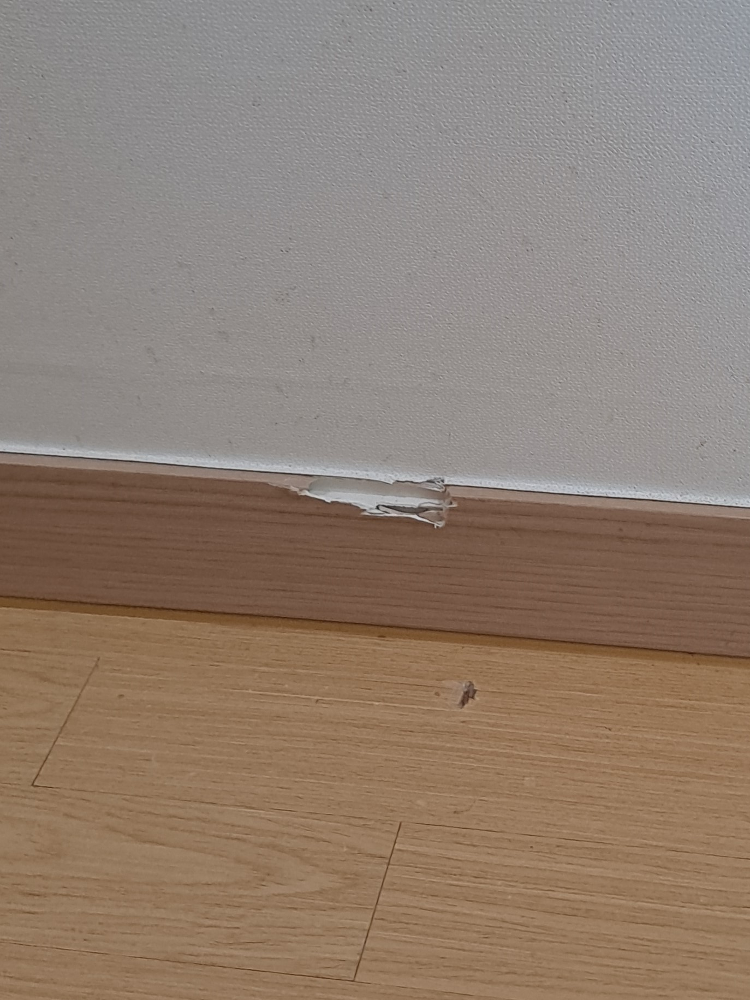
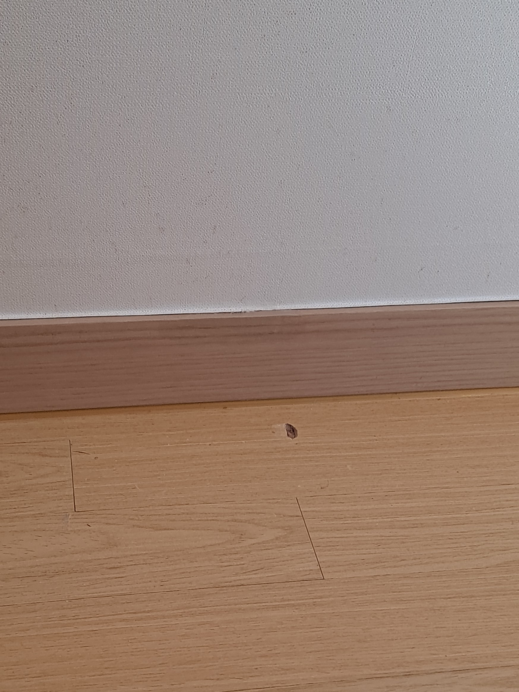

기존 걸레받이 유지
멀쩡한 구간은 그대로 두고 찍히고 깨진 부분만 보강해 복원합니다.
벽에 걸어둔 액자가 떨어지면서 걸레받이 상단을 강하게 찍어 필름과 안쪽 바탕재가 함께 깨진 현장입니다. 같은 색과 무늬의 걸레받이를 구할 수 없었고, 전체 필름 작업을 진행하면 바로 위에 붙어 있는 벽지가 훼손될 수 있어 기존 걸레받이와 벽지를 살리는 부분복원을 선택하셨습니다.

걸레받이 바로 위에는 벽지가 맞닿아 있어 필름을 넓게 떼거나 열을 과하게 사용하면 벽지 끝이 들뜨거나 찢어질 수 있습니다. 주변 벽지를 세심하게 보호하고 파인 바탕을 먼저 보강한 뒤 기존 나뭇결과 색상을 자연스럽게 연결해야 합니다.
국소적으로 깨진 경우에는 같은 자재를 새로 구하거나 긴 구간 전체를 철거하지 않고 손상 부위 중심으로 복원할 수 있습니다.
멀쩡한 구간은 그대로 두고 찍히고 깨진 부분만 보강해 복원합니다.
맞닿은 벽지를 뜯지 않고 보호하면서 필요한 범위만 작업합니다.
새 자재로 일부만 교체해 색과 무늬가 달라지는 문제를 줄일 수 있습니다.
긴 구간을 철거하고 다시 시공하는 것보다 비교적 빠르게 마무리합니다.
벽지와 바닥을 보호한 뒤 깨진 바탕을 단단하게 보강하고, 걸레받이의 높이와 모서리·나뭇결을 순서대로 복원합니다.
벽지와 바닥을 보호하고 필름과 바탕재의 파손 범위를 확인합니다.
들뜨고 약해진 조각을 정리해 안정적인 복원 바탕을 만듭니다.
파인 바탕재를 단단하게 채우고 걸레받이 높이에 맞춰 형태를 잡습니다.
주변 필름의 바탕색과 가로 나뭇결이 자연스럽게 이어지도록 맞춥니다.
표면 단차와 광도를 정리하고 벽지 경계까지 세심하게 확인합니다.
깨진 내부를 보강하고 걸레받이 상단의 직선과 표면 높이를 맞춘 뒤 기존 필름의 색상과 나뭇결을 이어 마감했습니다.

“부분수리 하니까 벽지도 안 상하고, 전체 시공을 안 해도 돼서 이질감이 없네요~ 진짜 만족스러워요!”
| 비교 항목 | 부분복원 | 전체 교체·필름 시공 |
|---|---|---|
| 비용 | 손상 부위 중심으로 비교적 부담이 적음 | 자재와 철거·전체 시공 비용이 발생 |
| 작업시간 | 현장 상태에 따라 비교적 짧음 | 긴 구간 철거와 재시공 시간이 필요 |
| 벽지 영향 | 주변 벽지를 보호하고 필요한 부분만 작업 | 철거·필름 작업 중 벽지 손상 가능성이 있음 |
| 완성도 | 기존 색상과 나뭇결에 맞춰 이질감을 줄임 | 같은 자재가 없으면 부분 교체 색상이 다를 수 있음 |
| 효과 | 국소 파손을 보강하고 기존 마감을 유지 | 노후·변형이 넓은 걸레받이를 전체 정리 |
걸레받이 전체와 파손 부위를 함께 보내주시면 필름 색상과 손상 상태를 확인해 상담합니다.